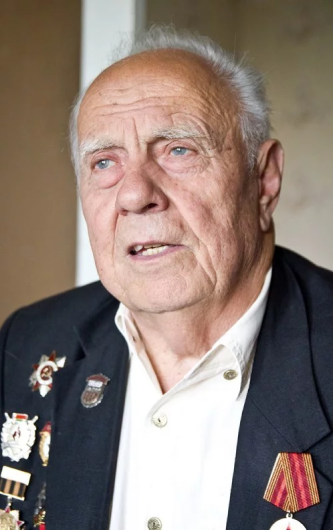
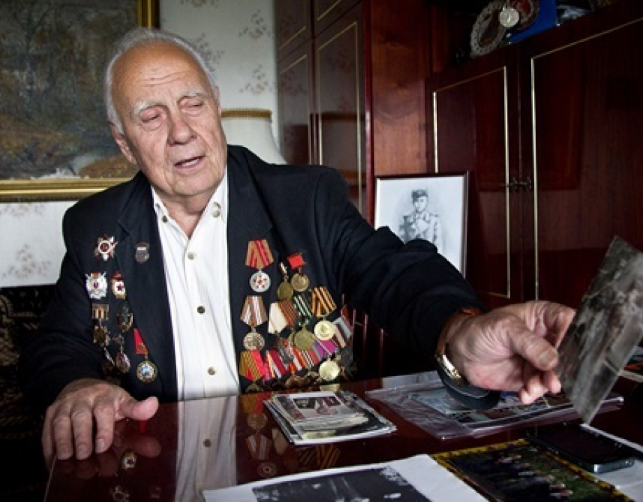

Дети на войне
По ступенькам сбегали вниз, нас подхватывали и подбрасывали так, что когда поймают, а когда и нет
Переступаем порог квартиры. Нас встречает хозяин, Василий Алексеевич Князев. На руках у него маленькая собачка – японский хин Тери.
– Она умная, знает 17 команд. В 1945-м у нас в отряде разминирования служила немецкая овчарка Арс, я ее тоже дрессировал.
Василий Алексеевич отпускает Тери, идет с нами в зал и останавливается возле столика с фотографиями. На одной из них мальчик лет одиннадцати в солдатской шинели, сапогах, с погонами и портупеей:
– А это я в 1944-м.

Василий Алексеевич один из тех, кого называли сыновьями полка. Родителей убили фашисты за связь с партизанами. Ему удалось убежать в партизанский отряд. Оттуда попал в 203-й отдельный отряд разминирования действующей армии.
– Советские солдаты заняли нашу деревню. Смотрю, в хате тети командир отряда, его заместитель и командир роты капитан Иванкин. Я сделал себе из лыка погоны, прикрепил их к армячку, нарисовал две лычки, подошел к капитану и докладываю: такой-то, хочу бить оккупантов. Он сначала посмеялся, а потом спросил у тети: «Вы бы отдали его нам?» А она говорит: «Да забирайте. Потому что до этого один из деревенских мальчишек поставил патрон противотанкового ружья, ударил по нему камнем, и ему разорвало живот. А потом они мне грушу взорвали». Это мы достали из фашистского снаряда порох, и подвели под мину. Груша подлетела на 30 метров. Нам интересно было.
И вот меня забрали в землянку. Солдаты мне смастерили шинельку из большей, подвернули погоны, как на фотографии, дали фуражку, шапку и даже портупею. Детство мое на этом закончилось. Меня зачислили на должность связного.
Пропись углем
На другом снимке с обратной стороны надпись «На память сыну отдельного отряда разминирования»:
– Это от нашего парторга Субботина. До войны он был учителем. Из деревянного ящика для снарядов сделал мне доску. Разлинеил ее углем и учил писать цифры, потом буквы.
А потом он сшил книжечку из оберточной бумаги. Она была плотной и не разбухала при намокании. Субботин написал мне таблицу умножения и велел запоминать. Я приходил к нему и сдавал. А уже в конце войны смог на открытке, которую послал брату, сам написать: «На память от Васи, сына полка».
Это была моя первая учеба на фронте. А уже после войны мы, трое сыновей полка, вместе пошли во второй класс. Сели за одну парту. На уроки приходили в военной форме с трофейными пистолетами. Поначалу немножко хулиганили, не подчинялись гражданским учителям, а как же – мы военные. На большой перемене построим всех мальчишек повзводно и гоняем их маршировать с песней: «Горит в сердцах у нас любовь к земле родимой». Как-то в туалете стрельнули из пистолета, за это нас забрали в военную часть, срезали по лычке и дали трое суток гауптвахты.

Пока шла операция «Багратион», Василий Алексеевич в составе III Белорусского фронта с отрядом разминирования прошел Минск, Витебск, Тильзит, Шяуляй, Рагнид, Лазденин, Гумбинен.
– В Литве попали на минное поле, где мины находились в деревянных и пластмассовых футлярах. На них не реагировали миноискатели. Поэтому поступил приказ мобилизовать собак крупных пород. На хуторе Таураге оказалась классная овчарка, широкая грудь, чистейшая немецкая порода, высокая. Тетка не хотела отдавать. Кричит: «Забирайте корову, коня, только не Арса». Капитана к себе овчарка не подпускала. Вставала на дыбы, рычала.
Тогда я подошел к будке с куском сахара. Собака завиляла хвостом, зашла за будку и слизнула сахар. Капитан кричит: «Карабин!» Я защелкнул карабин, который был на веревке, за ошейником. Арс как рванет! И поволок меня за собой. Тут подбегает капитан. Накинул на овчарку ватовку, закрутил ремешок вокруг морды, так мы ее повели в часть. Вместе со старшиной Астаховым учили Арса командам. Потом натаскивали на мины.
Под Кенигсбергом нам пришлось разминировать ночью. Вражеский самолет пролетел над полем и сбросил на нас светящиеся ракеты, которые медленно спускались на парашютиках. Стало светло, как днем, и фашисты начали бить по нам из минометов. Был кошмар. Взрывались солдаты, собаки. Уцелело около 25 человек из целой роты. Я сидел на ступеньках землянки возле амбразуры, мина ударила прямо возле нее. Смертельную рану осколками получил адъютант капитана Иванкина Архипкин. Мне разорвало в двух местах левый сапог. Тяжело ранен был и Арс. После боя я спросил, где он. Мне показали. У него из шеи лилась кровь, а глаза были полные слез. Он меня увидел, хвостом немножко вильнул. И я заплакал. Это была наша последняя встреча.
Чего спишь, Васька? Победа!
– На Берлин наш отряд не должен был выдвигаться. Но через дорогу от нас базировался артиллерийский полк, который в составе I Белорусского фронта направлялся в Германию. Я втихаря спрятался в «Студебеккер» за ящиками от снарядов. Так и оказался в Берлине. Но меня нашли и отправили обратно в Кенигсберг. День Победы встречал там, в трехэтажном бюргерском «маентке». Смотрю, такая кровать стоит: широкая, мягкая, пуховая. Я как плюхнулся на нее и моментально уснул в сапогах.
И вдруг ночью началась стрельба, как будто бой. В комнату влетает капитан и говорит: «Васька, чего спишь? Победа!» Я тоже схватил автомат и давай палить по окнам, мебели. Когда мы по ступенькам сбегали вниз, нас подхватывали и подбрасывали так, что когда поймают, а когда и нет. Одни плачут, другие смеются. Незабываемое зрелище!
P.S.: После войны Василия Алексеевича усыновили. Вместе с новой семьей он переехал в Гродно. Там окончил школу и физмат педагогического института. Занялся волейболом. Был игроком, затем играющим тренером. Десять раз с юношескими командами выигрывал первенство республики. Шесть раз – с женскими командами. Возглавлял команду высшей лиги «Буревестник» (Минск) и молодежную сборную СССР. Воспитал олимпийских чемпионов и призеров, чемпионов Европы. Заслуженный тренер СССР и БССР. В настоящее время председатель Комиссии юных участников войны («Батальон белорусских орлят») и заместитель председателя Республиканского комитета ветеранов войны.